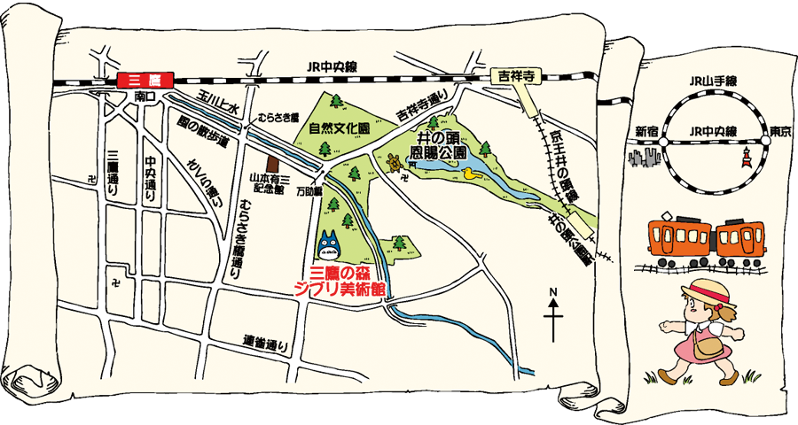

Fondé le 15 juin 1985 au japon, par Hayao MIYAZAKI et Isao TAKAHATA.
production de court-métrages et long-métrages d'animations, series et de jeux vidéo.
Le logo du studio est un totoro, une créature apparue dans le film Mon voisin Totoro en 1988.
L'origine du studio Ghibli vient de l'Italie pendant le seconde guerre mondiale qui ont désignés les avions des reconnaissances le fameux "Caproni Ca.309 Ghibli
Le musée de Ghibli est ouvert depuis 2001, il retrace les créations et réalisations du studio. Le musée se situe dans le parc d'Inokashira à Mitaka, dans la banlieue de Tokyo.
Vous trouverez ci-dessous les expositions permanentes :
A savoir qu'il faut entre 1 et 3 heures pour la visite.
Il faut réserver plusieurs mois à l'avance.
Pour un enfant de moins de 4 ans : Gratuit
Pour un enfant entre 4 et 6 ans : 0.80€
Pour un enfant entre 7 et 12 ans : 3.21€
Pour un enfant entre 13 et 18 ans : 5.62€
Pour les 19 ans et plus : 8.03€
Adresse : 1-1-83 Shimorenjaku, Mitaka-shi, Tokyo 181-0013, Japon (Tél. 0570-055777.
Un parc d'attraction devrait ouvrir ses portes pour 2022. En effet il s'agira d'un parc à thèmes, sur plus de 200 hectares, il sera composé de 5 zones.